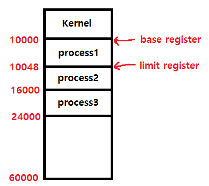

컴퓨터 시스템은 입출력 장치로 구분이 된다.
내부 장치 : CPU, 메모리
외부 장치 : 모니터, 키보드, 마우스, 디스크, 네트워크 장치
컴퓨터 시스템의 동작은 외부 장치에서 데이터를 읽어 내부 장치로 각종 연산을 수행 후 결과를 외부 장치로 다시 내보내는 방식인데
이를 입출력 I/O(input / out) 이라고 한다.
I/O 동작
컴퓨터의 메인 연산은 CPU가 담당 하지만 하드웨어에는 각각 컨트롤러가 붙어있는데 이 컨트롤러가 하드웨어의 연산을 담당한다.
컨트롤러가 따로 존재하기 때문에 입출력 장치와 CPU는 동시에 연산 수행이 가능
따라서 CPU와 하드웨어는 따로 따로 수행하는 동작을 연산할 수 있다.
하드웨어 컨트롤러가 데이터를 임시로 저장하기 위한 작은 메모리가 있는데
이것을 로컬 버퍼(local buffer)라고 부른다.
로컬 버퍼의 동작은 필요한 데이터를 읽을때 우선 로컬 버퍼에 데이터를 임시 저장 시킨 후 메모리에 전달되는데 데이터를 읽는 작업은 컨트롤러가 담당한다.
CPU 동작
CPU의 동작은 메모리에서 명령을 하나씩 읽어와서 수행하는데 어떻게 다중 처리가 가능한지 궁금할텐데 그것은 위의 입출력 장치의 동작을 보면 알 수 있다.
하드웨어의 컨트롤러가 필요한 데이터를 전부 읽었을 때 인터럽트를 발생 시키는데
이 인터럽트는 컴퓨터에게 보내는 일종의 신호라고 볼 수 있다.
이 신호를 CPU 옆에 있는 인터럽트 라인이 받아주는데 인터럽트 신호가 들어오면
작업 중간에 하던 일을 멈추고 인터럽트와 관련된 일을 처리하고 끝나면 본래 하던 일을 다시 수행한다.
이 방식을 풀어서 말하면 CPU는 명령을 수행할 때 인터럽트 발생을 체크 후 인터럽트가 있으면 먼저 처리하고 본래의 명령을 수행한다.
컨트롤러(controller) : 제어기
인터럽트(interrupt) : 인터럽트는 CPU에게 이벤트를 알려주는것 발생은 컨트롤러에 의해서발생
그 외 사전적 의미
실행 중인 프로그램을 일시 중단하고 다른 프로그램을 끼워 넣어 실행 시키는 것
CPU의 즉각적인 처리를 필요로 하는 이벤트를 알리기 위해 하드웨어나 소프트웨어에서 발생시키는 요청
로컬 버퍼(local buffer) : 임시 저장 메모리
메모리와 CPU
메모리의 접근은 CPU에서만 가능
CPU외 하드웨어들은 이를 인터럽트를 발생시켜 CPU가 대신 일을 하게함
메모리에 접근을 하려면 CPU를 거쳐야하는데 이 작업을 다른 하드웨어 컨트롤러가 인터럽트를 발생시켜 인터럽트 신호를 CPU에 전달하고
인터럽트 라인이 이 신호를 받아준다.
CPU를 통해서 메모리 접근이 가능
위의 접근 방식을 사용하면 모든 하드웨어가 메모리에 접근하려면 CPU를 거쳐야 하기 때문에 인터럽트를 자주 발생시키게 되는데 이 문제점이 발생한다.
CPU 효율성 하락
CPU 효율성이 떨어지는것을 해결하기 위해 DMA 라는 장치를 하나 두는데
DMA(Direct Memory Access)
직접 메모리 접근이라고 부르며 일종의 컨트롤러다.
DMA는 다른 하드웨어 장치에서 메모리에 접근을 할때 CPU 대신 DMA가
로컬 버퍼에서 메모리로 읽어온다.
CPU 대신 DMA 가 다른 하드웨어의 메모리 접근 요청을 처리함
이때 읽어들이는 단위는 바이트 단위가 아니라 블록이라는 큰 단위로 정보를 메모리로 읽어온 후
CPU에게 작업을 완료했다는 인터럽트 신호를 보낸다.
CPU가 받는 인터럽트 신호를 줄여서 입출력 연산을 빠르게 수행
DMA 역할을 단순하게 말하자면 인터럽트를 한 곳에 모아서 처리후 CPU에게 완료됐다고 신호를 보내주는 것이다.
기억 장치 구조
기억 장치는 2가지로 분류가 되는데, 주 기억 장치와 보조 기억 장치로 나뉜다.
주 기억 장치 : 휘발성
RAM
보조 기억 장치 : 비휘발성
플래시 메모리, CD, 마그네틱 테이프, 하드 디스크
주 기억 장치에 해당하는 RAM은 단순히 PC 사용자라면 작업 관리자를 통해서 많이 봤을 것이고 프로그래머라면 RAM을 직접적으로 사용해봤을 것이다.
컴퓨터를 처음 켰을때 작업 관리자를 켜보면 운영 체제를 사용하기 위한 메모리들이 이미 적재된 상태이며 프로그램을 사용할때
프로세스가 생기고 메모리가 적재되는걸 보게되는데 이것이
주 기억 장치 이다.
그리고 컴퓨터를 처음 켰을때 있는 파일들이 보일것인데 이는 하드 디스크에 저장된 파일들이고 이것이
보조 기억 장치 이다.
쉽게 말하자면 컴퓨터를 켰을때 CPU는 하드 디스크에서 파일을 읽어들이고
운영 체제의 도움을 받아서 화면에 출력시키는 겁니다.
그리고 프로그램들은 쓰일때만 쓰이기 때문에 휘발성 메모리에 적재시키게 되는데 이 공간이 RAM입니다.
프로그램의 실행은 주 기억 장치에 저장되야함 - 휘발성
운영 체제가 불러온 파일들은 보조 기억 장치에서 읽어옴 - 비휘발성
기억 장치 계층
레지스터 : CPU
캐시 메모리
주 기억 장치 : RAM
보조 기억 장치
계층을 크게 보자면 총 4가지 계층이다.
속도가 빠른 최상위 레지스터 부터 속도가 제일 느린 최하위 보조 기억 장치가 있고
레지스터 부터 주 기억 장치까지 휘발성 저장 장치로 구성이 되있다.
접근 속도가 빠를수록 비용이 비싸고 적은 용량을 사용한다.
접근 속도가 느릴수록 비용이 싸고 큰 용량을 사용한다.
캐시 메모리(cache memory) - SRAM
- CPU가 캐시 메모리에서 필요한 데이터를 찾으면 RAM 까지 읽지 않음
만약 데이터가 없다면 RAM을 읽음
- RAM과 CPU 사이의 데이터 접근 속도를 완충해 주기 위해 사용
요약 - 컴퓨터의 처리속도 능력을 향상시키기 위해 사용함
하드웨어 보안
컴퓨터의 동작은 결국 하드웨어에 의해서 작동이되는데
이것은 하드웨어가 프로그램을 실행하는 역할을 한다는 뜻이된다.
그래서 하드웨어의 충돌을 방지하지 않는다면 여러 프로그램을 동시에 작동했을 경우 문제가 발생할것이다.
하드웨어의 보안을 유지하기 위해 두 가지 모드가 존재하는데
커널 모드(kernel mode)와
사용자 모드(user mode)이다.
CPU는 두 모드를 구분하기 위해서 내부에
1비트인 Binary bit가 있다.
모드 비트가 0이면 커널 모드, 1이면 사용자 모드이다.
커널 모드 - 0
CPU의 제어권을 가지고 모든 종류의 명령을 실행 가능
사용자 모드 - 1
제한적인 명령만 실행 가능
중요한 영향을 미치는 연산은 커널 모드에서만 가능
메모리 보안
메모리에도 보안이 필요한데 그 이유는 간단하다.
컴퓨터를 키면 깔려있는 운영 체제 소프트웨어가 실행이되는데 이 때 운영 체제는
메모리에 운영 체제 실행에 필요한 메모리만 적재를 한다 이를 커널이라고 부른다.
운영 체제의 실행이 끝나고 컴퓨터를 사용할때 프로그램을 실행시켰는데
커널 메모리 영역에 실행한 프로그램의 메모리가 커널 메모리 영역에 침범을 한다면 운영 체제에 문제가 생길것이다.
base register
프로세스의 시작 주소
limit register
프로세스의 범위 주소

한 가지 가정으로 예를 들자면
프로세스는 메모리의 적재가 되야지 발생하는데 이 프로세스의 적재된 메모리의 시작주소가 10000이다
이를 base ragister라고 하며 이 프로세스의 끝 지점이 10048이다 그럼 이 프로세스의 적재된 메모리는 10048이 되는데 이것을
limit ragister라고 한다.
이 프로세스를 가지는 프로그램에서 메모리 접근 연산을 수행할 때
두 레지스터의 범위, 합법적인 영역인지 체크한다.
타이머(timer)
CPU가 한가지 일만 한다면 다중 처리가 불가능해 컴퓨터를 효율적으로 사용할 수 없을것이다.
간단하게 웹브라우저를 실행했는데 이 웹브라우저가 완전히 다 켜질때 까지 다른 작업을 할 수 없다고 생각하면 된다.
CPU 독점 현상을 막기 위해 타이머(timer)라는 하드웨어를 사용한다